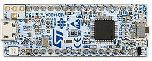
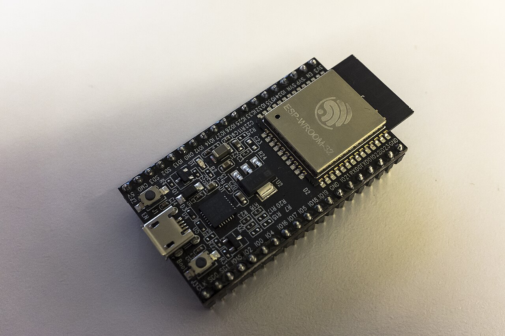
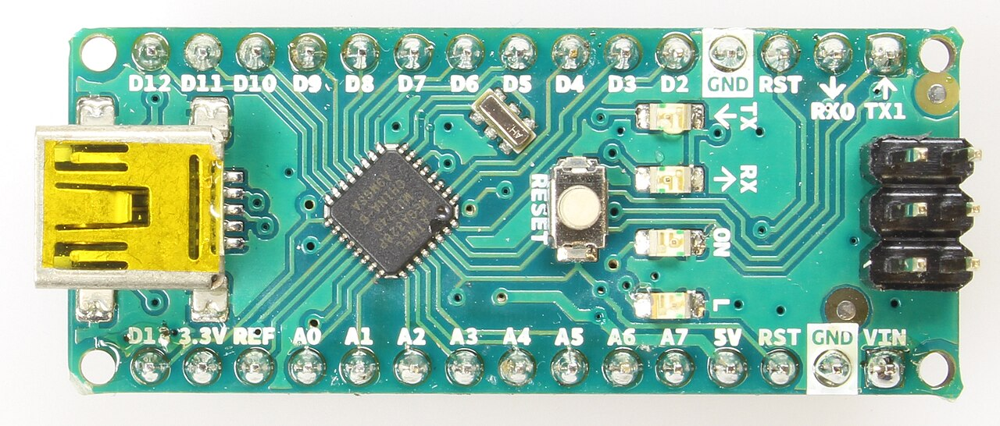
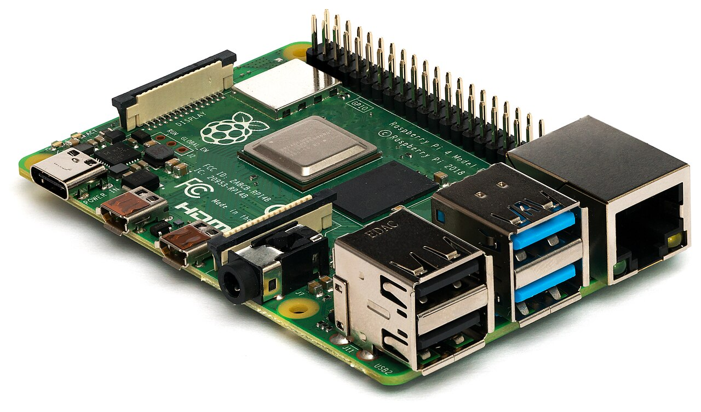

Timing plan · 90 minutes
- 0–8Framing: a model that is 94 % accurate and does not fit is 0 % useful. Who is in the room — and why the course has a primer track for non-ML backgrounds.
- 8–22Embedded systems in plain terms (Fig 1.1); definition by constraint; the compute continuum and the Dennard story.
- 22–32What machine learning adds: model, training, inference; the embedded ML workflow.
- 32–43Why on the device at all; applications, workloads and sensor fusion.
- 43–50Break.
- 50–65The five budgets, with the coin-cell derivation done live; the energy calculator.
- 65–77Where the energy goes (Horowitz); the cascade.
- 77–86Three case studies end-to-end; research directions.
- 86–90Takeaway; what to read before Session 2; reminder to pick a presentation paper.
In one sentence
Everything in this course follows from two facts: on a small device, memory and energy are fixed in advance and cannot be borrowed; and moving a byte costs a hundred to ten thousand times more energy than computing with it.
1.1Embedded systems, in plain terms
Most of you use embedded systems many times a day without seeing one. The washing machine that adjusts its spin to the load, the hearing aid that suppresses background noise, the smartwatch that counts steps, the brake controller of a car, the thermostat that learns when you come home — each contains a small computer that is built into a larger product, does one job, and does it for years without anyone installing updates or watching a screen. That is the working definition we will refine below: an embedded system is a computer that is part of something else.
The computer inside is usually a microcontroller (MCU): a single chip that contains a processor core, its memory and its input/output interfaces. It is worth looking at one as a machine-learning engineer would, because almost every constraint in this course is visible in its block diagram.
Five features of that picture shape everything that follows.
- Two kinds of memory, both small. Flash (or, on newer parts, MRAM) keeps its contents without power; it holds the program and, for us, the trained model's weights. SRAM is fast working memory that is lost when power is removed; it holds the input data, the intermediate results of the network (its activations), and everything else the program is doing. Typical sizes are 256 kB to 2 MB of flash and 32 kB to 1 MB of SRAM — a thousand to a million times less than a laptop.
- No operating system, or a tiny one. The program runs bare-metal (directly on the hardware) or under a small real-time operating system (RTOS) such as FreeRTOS or Zephyr, which schedules a few tasks with guaranteed timing. There is no virtual memory: if a buffer does not fit, nothing pages it out to disk. Many projects forbid dynamic memory allocation altogether, so every buffer's size is fixed when the firmware is compiled.
- A modest processor. An Arm Cortex-M class core at tens to a few hundred MHz, typically with a floating-point unit and with SIMD instructions that perform two 16-bit multiply–accumulates in a single instruction (8-bit values are widened to 16 bits first; newer cores with vector extensions handle many more lanes). That last feature is why 8-bit integer networks run several times faster than floating-point ones on these chips (Session 3).
- Peripherals that talk to the physical world. Analog-to-digital converters (ADCs), digital microphone interfaces, serial buses for motion sensors, timers. DMA engines copy sensor samples into memory while the core sleeps — the basis of every low-power design.
- Power modes. The chip can switch off most of itself for microseconds or hours and wake on a timer or a sensor interrupt. Average power is therefore set by how rarely and how briefly it wakes up, not by its peak speed.

Photo: Wikimedia Commons

Photo: Wikimedia Commons

Photo: Wikimedia Commons

Photo: Wikimedia Commons
Foundations · bits, bytes and orders of magnitude
Throughout the course, a byte is 8 bits; kB is 1024 bytes and MB is 1024 kB (we follow the embedded convention; the difference from 1000 is irrelevant at our precision). A neural-network weight stored as a 32-bit float occupies 4 bytes; stored as an 8-bit integer, 1 byte. So a network with 250 000 parameters needs about 1 MB as floats and 250 kB as 8-bit integers — the difference between "does not fit" and "fits" on a typical microcontroller. Energy is in joules (J), power in watts (W = J/s); you will meet the prefixes m (10⁻³), µ (10⁻⁶), n (10⁻⁹) and p (10⁻¹²) constantly. A useful habit for this course: always write the order of magnitude before the digits.
1.2Definition by constraint, not by size
Foundations · where the constraint came from
A CMOS gate burns energy in two ways. Dynamic power is paid every time a node switches:
with α the activity factor (how often it switches), C the switched capacitance, V the supply voltage and f the clock. Static power is leakage, paid continuously whether anything switches or not.
Dennard scaling was the observation that shrinking a transistor also let you shrink V and C proportionally, so each generation gave more transistors and a higher clock at constant power. It ended in the mid-2000s, because below roughly 1 V the threshold voltage cannot fall further without leakage exploding.
Read the square on V carefully: it was the most powerful term in the equation, and it is the one that ran out. What remains is α — do less work — and C — move data a shorter distance. Those two are exactly what quantization, sparsity, efficient architectures and accelerators buy. A hardware fact from 2004 is why this syllabus looks the way it does in 2026.
An embedded system is a computing system built into a larger artefact to perform a dedicated function, usually under real-time and resource constraints, and usually without a general-purpose user-facing operating system. The useful part of that definition is the constraint set, not the physical size. A rack-mounted automotive ECU is embedded; a Raspberry Pi 4 running Debian on a desk is mostly not, even though it is smaller.
Three constraint dimensions matter for us:
- Timing. A hard real-time system fails if a deadline is missed (airbag deployment, motor commutation). A soft real-time system degrades (a keyword detector that occasionally answers late). Most ML-in-the-loop systems are soft real-time inside a hard real-time host, and the interface between them is where scheduling bugs live.
- Resources. Memory in kilobytes to a few megabytes; clocks in tens of MHz to low GHz; no virtual memory, often no heap.
- Energy. Frequently a fixed energy store (a cell) and a required service life, which converts directly into an average power ceiling — see §1.6.
| Tier | Compute | Memory | Power | Representative model |
|---|---|---|---|---|
| Cloud / datacentre accelerator | 10²–10³ TOPS | 10–100 GB | 200–700 W | Anything; foundation models |
| Edge server / workstation GPU | 10–100 TOPS | 8–48 GB | 50–300 W | Multi-stream video analytics |
| Embedded AI module (e.g. Jetson class) | 1–100 TOPS | 4–32 GB | 5–60 W | Detection/segmentation CNNs, small VLMs |
| Mobile SoC / application processor | 1–50 TOPS | 2–16 GB | 1–8 W | MobileNet-class, on-device SLMs |
| MCU + NPU (e.g. Cortex-M + Ethos-U class) | 10–500 GOPS | 0.5–8 MB | 10–200 mW | Small CNNs, int8 only |
| Plain MCU (Cortex-M0+/M4/M7 class) | 10–500 MOPS | 32 kB – 1 MB SRAM | 1–50 mW | DS-CNN keyword spotting, tree ensembles |
| Always-on / sub-threshold sensor front end | < 10 MOPS | 2–64 kB | 1 µW – 1 mW | Threshold + tiny MLP wake-up stage |
Table 1.1 — The compute continuum. Order-of-magnitude teaching values spanning the classes of device the course refers to; always re-derive from the datasheet of the specific part. The interesting design work happens in the bottom three rows, where the constraint is binding rather than merely annoying.
In-class exercise — which of these is embedded?
Raspberry Pi 4, STM32L4 microcontroller, NVIDIA Jetson Orin Nano, a smartwatch SoC, a car's brake ECU. The productive answer is not a classification but a ranking: order them by how binding the memory, power and timing constraints are, and note that the ranking changes with the application. The Pi is general-purpose on a bench and embedded inside a machine that must boot in 400 ms and never swap.
1.3What machine learning adds — a primer for non-specialists
Several of you come from electronics, physics, signal processing or computer engineering rather than machine learning. This section gives the minimum you need for the next three sessions; Session 3 returns to it in depth.
A model is a function ŷ = f(x; θ) that maps an input x — a second of audio, a window of accelerometer samples, an image — to an output ŷ: a class label ("yes", "no", "silence"), a number (remaining battery life), or a score (how anomalous this vibration is). The function has a fixed form chosen by the engineer (a decision tree, a neural network of a certain shape) and a large set of numerical parameters θ, which are not chosen by hand but learned from examples.
- Training is the search for good parameters. Given many examples (x, y) with known answers, an optimisation algorithm adjusts θ so that f(x; θ) agrees with y as often as possible. Training is computationally heavy — millions to billions of evaluations of f and its derivatives — and in almost all embedded products it happens on a workstation or in the cloud.
- Inference is the use of a trained model: evaluate f(x; θ) once for a new input. It is orders of magnitude cheaper than training, and it is what runs on the device. When this course says "embedded ML" it almost always means embedded inference; on-device training is a research frontier (Session 4).
- Generalisation is the whole point: the model must be right on inputs it has never seen. A model that only reproduces its training examples is useless, and most of the methodology of machine learning — separate test data, regularisation, honest evaluation — exists to measure and protect generalisation.
Why learn the function rather than design it? Because for many sensing tasks nobody can write the rule down. "Fire when the user says hey device, but not when the television says something similar, in any accent, with a dishwasher running" is not a rule an engineer can code by hand; it is a function that can be estimated from thousands of recordings. Embedded machine learning — often called TinyML when the target is a microcontroller — is the practice of making such learned functions small, fast and frugal enough to run inside the device.
The workflow above is also the map of this course. Session 2 covers the left half — how the physical signal becomes data, and how data becomes features. Session 3 covers the middle — which model family to choose, and how to shrink a model without destroying it. Session 4 covers the right half — the hardware, the compilers and what happens after deployment. The point to take away now is the two loops: in an embedded project, almost all the effort is in iterating between training, compression and on-device measurement, and in feeding field data back into the dataset.
Common misconception
"The model is the product." In a deployed embedded system the trained network is often a few tens of kilobytes inside firmware of several hundred, surrounded by signal conditioning, feature extraction, decision logic, power management and an update mechanism. Many deployed ML failures are failures of those surroundings — a changed microphone gain, a sampling rate set wrongly in firmware, a buffer overwritten — not of the model.
1.4Why push inference to the device at all
Five reasons, in rough order of how often they are the real reason:
- Energy of communication. Transmitting raw sensor data costs far more energy per useful decision than computing the decision locally. This is the argument that most often survives scrutiny, and it is quantified in §1.7.
- Privacy and regulation. Data that never leaves the device cannot be intercepted, subpoenaed or mis-shared. For biosignals and audio in the home this is frequently a legal requirement rather than a preference.
- Latency and its variance. A network round trip adds not just milliseconds but a heavy tail. Control loops care about the 99.9th percentile, not the mean.
- Availability. Agricultural, marine, underground and in-flight deployments have no reliable link.
- Cost at scale. Bandwidth and cloud inference are recurring per-device costs; on-device inference is a one-off silicon cost.
Note the corollary that students routinely miss: these reasons argue for putting the decision on the device, not necessarily the whole model. Hybrid designs — a tiny always-on model that gates an expensive cloud model — are usually the strongest engineering answer, and they are a recurring pattern in this course.
1.5Applications, workloads and sensor fusion
It helps to see the breadth of what is actually deployed before narrowing to techniques. The table groups embedded ML applications by sensing modality; the figure after it places representative workloads by their raw data rate and their compute per inference.
| Domain | Typical sensors | Example tasks | Usual binding constraint |
|---|---|---|---|
| Audio and voice | MEMS microphone | keyword spotting, voice activity, acoustic event and scene detection | always-on energy |
| Wearables and health | IMU, PPG, ECG, temperature | activity recognition, fall detection, arrhythmia and seizure detection | battery life, regulatory validation |
| Industrial monitoring | accelerometer, current, acoustic | predictive maintenance, anomaly detection on motors and bearings | scarce labels for faults |
| Vision at the edge | low-resolution CMOS camera | person detection, counting, gesture, visual wake words | SRAM for activations |
| Environment and agriculture | gas, humidity, soil, acoustic | air quality, pest or animal detection, irrigation control | energy harvesting, connectivity |
| Automotive and robotics | radar, IMU, camera, ultrasound | driver monitoring, gesture, obstacle detection, control | hard real-time deadlines, safety |
| Human–machine interfaces | capacitive, radar, IMU | gesture recognition, presence detection, handwriting | latency perceived by the user |
Table 1.2 — Embedded ML application domains. The last column is the constraint that most often decides the design; it is a starting hypothesis, not a rule.
Two readings of that figure matter. Reading across: the raw data rate decides whether the alternative to on-device inference — streaming everything to a server — is even possible. A temperature sensor produces a few bytes per second and can afford to send all of it; a microphone produces 32 kB/s and a VGA camera several MB/s, which no battery-powered radio can sustain continuously. Reading up: compute per inference decides which class of device can run the model at all, and spans eight orders of magnitude.
Sensor fusion
Many applications combine several sensors — an earbud that uses both its microphone and its accelerometer to detect that its wearer, not a bystander, is speaking; a wrist device that combines motion and heart-rate signals. Where the information is merged is a design decision with direct cost consequences.
On a power-constrained device, late fusion has a property that matters more than its accuracy: each sensor's model can be switched off independently, so a cheap sensor can gate an expensive one. That is the cascade idea of §1.8 applied across sensors.
1.6The five budgets depth
Given a device and an application, write these down before opening a notebook.
(a) Weight memory — flash / ROM
Parameters live in non-volatile memory. For a model with P parameters at b bits, the weight footprint is P·b/8 bytes, plus per-tensor quantization metadata, plus the interpreter or generated kernel code, plus the rest of the firmware. A useful rule: the model may have about half of the flash, never all of it.
(b) Peak activation memory — SRAM
This is the budget that kills naive designs, and it is not the model size. Executing a graph layer by layer, the memory that must be simultaneously live at step i is (input tensor) + (output tensor) + (any tensor produced earlier that is still needed later, i.e. a residual skip). Peak SRAM is the maximum of that quantity over the whole graph:
For a typical classification CNN this maximum occurs in the first few layers, where the spatial resolution is still high, even though almost all the parameters are at the other end of the network. This asymmetry — parameters at the back, activations at the front — is the single most important structural fact about deploying CNNs on microcontrollers, and it is precisely the observation that MCUNetV2 exploits (§4.16).
(c) Compute — MACs and effective operations
Count multiply–accumulate operations, not "FLOPs", and state the convention: one MAC is two floating-point operations if you insist on FLOPs, and much of the literature disagrees with itself here. For a convolution with input H×W×Cin, kernel k×k, output channels Cout, stride 1 and 'same' padding:
Then divide by the device's sustained MAC rate — never its peak — to get a latency lower bound. §4.3 shows why the true latency can be several times that bound.
(d) Latency and the real-time budget
The deadline is set by the application, not the model: a wake-word detector processing 1-second windows with 50 % overlap must finish in well under 500 ms, and in practice under ~100 ms so the rest of the firmware can run. Include feature extraction in the budget; on an MCU, an FFT-plus-mel front end can cost a substantial fraction of what the network costs.
(e) Energy per inference, and the duty cycle that follows
Worked derivation — a one-year coin cell
A CR2032 lithium coin cell is nominally 3 V with roughly 225 mAh of capacity, so its stored energy is about
A one-year service life is 3.15 × 10⁷ s, so the admissible average power is
Suppose the always-on part of the system (RTC, sensor bias, leakage) already draws 20 µW. That leaves ≈ 57 µW for inference. If one inference costs 5 mJ — a plausible figure for a small CNN plus front end on an MCU running for tens of milliseconds — then the admissible inference rate is
If the application requires one inference per second, you are short by a factor of about 90. That factor is the design problem, and the four ways out are: reduce energy per inference (compression, Session 3), reduce the rate (cascade with a cheap always-on stage, §1.8), increase the store (bigger cell, harvesting), or relax the specification. Notice that none of these is "train a better model".
Caveat: real coin cells deliver much less than nameplate capacity under pulsed loads with high peak current, because of internal resistance and voltage sag. Derating by 30–50 % for a radio-bearing design is normal engineering practice. Quote the derivation, then quote the derating.
Common misconception
“Our chip does 2 TOPS, so it is 12× faster than the 160 GOPS part.” TOPS is a peak multiplier count — the number you get if every arithmetic unit is fed every cycle. Whether your layer can feed them is decided by arithmetic intensity and memory bandwidth (Session 4), and whether the compiler supports your operators at all is decided by the vendor toolchain (Session 4). A part with a quarter of the peak and twice the usable bandwidth is routinely faster on real models. Ask for measured latency on your graph, or measure it yourself.
1.7Where the energy actually goes
Students arrive believing that arithmetic is the expensive part. It is not, and the gap is roughly two orders of magnitude. Horowitz's widely-cited ISSCC 2014 figures for a 45 nm process make the point cleanly:
| Operation (45 nm) | Energy | Relative to an 8-bit add |
|---|---|---|
| 8-bit integer add | 0.03 pJ | 1× |
| 32-bit integer add | 0.1 pJ | 3× |
| 8-bit integer multiply | 0.2 pJ | 7× |
| 16-bit float multiply | 1 pJ | 33× |
| 32-bit float multiply | 4 pJ | 133× |
| 8 kB cache read | 10 pJ | 333× |
| 32 kB cache read | 20 pJ | 667× |
| 1 MB cache read | 100 pJ | 3 300× |
| DRAM access | 1.3–2.6 nJ | ≈ 43 000–87 000× |
Table 1.3 — Rough energy per operation at 45 nm, after Horowitz (ISSCC 2014). Absolute values shrink with process node; the ratios — and therefore the design conclusions — have proved remarkably stable.
Three conclusions follow, and they organise most of the rest of the course:
- Precision is an energy knob. Going from fp32 multiply to int8 multiply is a ≈20× energy reduction in the multiplier itself, before counting the halved memory traffic. This is why Session 3 exists.
- Locality is a bigger knob than precision. A single DRAM access can cost more than ten thousand 8-bit adds. Any technique that keeps operands in registers or on-chip SRAM beats any technique that merely reduces arithmetic. This is why Session 4 exists, and why a "50 % FLOP reduction" that doubles memory traffic is a regression.
- Sparsity only pays if the hardware can skip. Removing a multiply saves 0.2 pJ; the index bookkeeping needed to exploit unstructured sparsity may cost more. Session 3 makes this precise.
1.8The cascade: the architectural pattern that follows from Fig 1.7
If energy per inference is the binding budget and most inferences are negative (no keyword, no person, no fault), then the right system is not one model but a cascade: a very cheap always-on stage that runs constantly with a high false-positive rate, gating a more expensive stage that runs rarely, optionally gating a cloud model that runs almost never.
Let stage j have energy Ej and let pj be the probability that stage j passes its input onward. The expected energy per input window is
With p₁ = 0.02, a second stage 100× more expensive than the first costs only twice the first stage's energy on average. The design consequence: the always-on stage should be optimised for recall at a fixed energy, and precision is the next stage's job. Students frequently optimise the wrong metric here, which is why it is worth stating explicitly.
1.9Three systems, end to end
The budgets become concrete only when applied. The three vignettes below are composites of published designs, simplified to show the reasoning; each names the constraint that turned out to bind. You will return to all three in later sessions.
(a) Keyword spotting on a coin cell
A wake-word detector listens continuously for one or a few words. Signal: one MEMS microphone at 16 kHz, 16-bit — 32 kB/s. Features: 40 ms frames every 20 ms, 10 MFCCs per frame, one second of context: a 49×10 feature matrix (Session 2). Model: a depthwise-separable CNN of the kind introduced by Zhang et al. (2017) — about 39 k parameters, 2.7 million multiply–accumulates (MACs) per inference, 94 % accuracy on the 12-class Speech Commands task. Device: a Cortex-M4F class MCU. What binds: energy. The network itself is cheap (Fig 4.8 in Session 4 estimates ≈ 20 µJ per inference on a modern low-power MCU), but running it continuously, plus the microphone and front end, is not; deployed designs therefore put a voice-activity detector costing microwatts in front of it — a cascade.
(b) Vibration anomaly detection on a motor
Signal: a three-axis accelerometer on a motor housing at 1–10 kHz. Features: spectral band energies over a one-second window. Model: an autoencoder trained only on healthy-machine data, which flags inputs it reconstructs poorly — anomaly detection, because faults are rare and every machine fails differently. Device: an MCU in a sensor node that wakes every few minutes. What binds: not compute or energy but data: there are no labelled examples of the failure you most care about, and the healthy baseline drifts with load and temperature (Session 4 discusses drift).
(c) Arrhythmia detection in a wearable
Signal: single-lead ECG at 250 Hz, 12-bit. Features: either hand-designed (R-peak intervals, QRS width) or none — a 1-D CNN on raw samples. Model: a small 1-D CNN or a gradient-boosted tree on interval features. Device: a wearable SoC. What binds: the cost of a wrong answer, and therefore validation: a medical device must document sensitivity and specificity on clinically representative data, which makes the evaluation methodology of Session 3 a regulatory requirement rather than good practice. The data rate is small enough that streaming to a phone is feasible — so the case for on-device inference here rests on battery life (the radio) and privacy, not on bandwidth.
In-class exercise — find the binding budget
For each vignette, write down the five budgets of §1.6 with order-of-magnitude numbers, and circle the one that binds. Then change one thing — a camera instead of a microphone, a mains-powered device instead of a coin cell, a 10× larger dataset — and say which budget binds now.
1.10A short honest history
Signal processing on microcontrollers is decades old; what changed is which functions we are willing to learn rather than design. Three inflection points are worth naming: the arrival of practical mobile-scale CNNs (2016–2017, Session 3); the arrival of integer-only inference and its toolchain (2017–2018, Session 3); and the arrival of memory-aware co-design of architecture and runtime for microcontrollers (2020 onwards, Session 4). Since roughly 2023 a fourth wave has been in progress — transformer and state-space models at the edge, and on-device language models — which Session 4 treats as an open research area rather than settled practice.
Research directions — where a PhD fits
The field is young enough that many basic questions are open. The list below is a map, not a ranking; each item is attached to the session in which its background is taught, and the presentation topics of Session 5 were chosen to touch most of them.
- Learning on the device. Adapting a deployed model to its user, its sensor or its drifting environment within kilobytes of memory and without labels (Session 4; Lin et al. 2022).
- Data efficiency. Self-supervised pre-training, few-shot adaptation and synthetic data for sensing tasks where labelling is expensive (Sessions 2–3).
- Hardware-aware model design. Neural architecture search and compression that optimise measured latency, peak memory and energy on a specific chip rather than proxy counts (Session 3).
- Compilers and runtimes. Memory planning, operator fusion, patch-based execution and code generation for heterogeneous MCU + NPU systems (Session 4).
- Beyond-digital hardware. Analog in-memory computing and neuromorphic processors, and the algorithms that tolerate their noise and constraints (Session 4).
- Intermittent and batteryless computing. Inference on energy-harvesting devices that lose power mid-computation and must checkpoint progress.
- Trustworthiness. Robustness to sensor faults and adversarial inputs, privacy guarantees for federated learning, and the security of model updates in the field.
- Foundation models at the edge. Which parts of large pretrained models can be distilled, quantized or partitioned onto phones, wearables and gateways — and with what loss.
- Measurement science. Benchmarks, energy measurement methodology and reproducibility — the unglamorous foundation every other item depends on.
If you remember one thing from Session 1
Write the five budgets down before you write any code. Arithmetic is nearly free; data movement and communication are not. When the numbers do not close, the legitimate moves are cheaper inference, fewer inferences, more energy, or a different specification — never "train a better model".
Before Session 2
- V. Sze, Y.-H. Chen, T.-J. Yang, J. Emer, "Efficient Processing of Deep Neural Networks: A Tutorial and Survey," Proceedings of the IEEE 105(12), 2017. arXiv:1703.09039.Sections I–III. The field's canonical statement that efficiency is a hardware–algorithm co-design problem; introduces the vocabulary of Session 4.
- P. Warden, "Speech Commands: A Dataset for Limited-Vocabulary Speech Recognition," 2018. arXiv:1804.03209.Short and readable; how a benchmark dataset for embedded audio was designed and why its choices matter. Background for Session 2.
- Browse the presentation topics and shortlist two papers.
Discussion questions
- The "privacy" argument for edge inference is often made loosely. Construct a case where moving inference to the device makes privacy worse.
- Table 1.3 (energy per operation) is from a 45 nm process. Which of its ratios would you expect to be least stable across process nodes, and why?
- A vendor advertises "2 TOPS at 1 W". Name four things you must know before that number predicts anything about your application.
- Pick a sensing problem from your own research. Which of the three fusion strategies would you use, and which budget would bind first?
Exercises
- A device runs on two AA cells (≈ 2×1.5 V, ≈ 2000 mAh) and must survive three years. Derive the average power ceiling. If a 30 % derate for pulsed load is applied and the standby draw is 40 µW, what energy per inference is admissible at 1 Hz?
- Explain why peak activation memory, not parameter count, determines whether a CNN fits on an MCU, and describe the shape of the per-layer memory profile that makes this true.
- A two-stage cascade has E₁ = 50 µJ, E₂ = 5 mJ and a first-stage pass rate of 3 %. Compute the expected energy per window. What pass rate makes the second stage cost as much, on average, as the first?
- You reduce a model's MACs by 40 % but its measured latency increases. Give two distinct mechanisms that could explain this.
Further reading
- M. Horowitz, "Computing's Energy Problem (and what we can do about it)," ISSCC 2014.Source of Table 1.3; the whole talk is worth an hour.
- P. Warden and D. Situnayake, TinyML, O'Reilly, 2019.The practitioner's counterpart to this course.
- V. Janapa Reddi et al., Machine Learning Systems (open textbook, mlsysbook.ai).Systems-level framing; good background for Session 4.
- C. Banbury et al., "Benchmarking TinyML Systems: Challenges and Direction," 2020. arXiv:2003.04821.Why measuring embedded ML is harder than it looks.